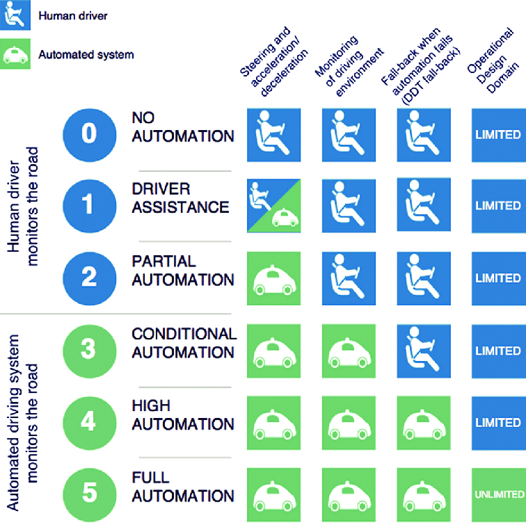
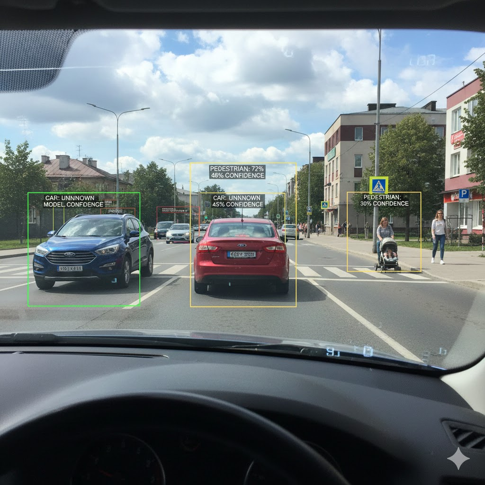

From Mechanical to Digital
For over a century, the relationship between a driver and their vehicle was purely mechanical. When you turned the steering wheel, it pulled a cable to turn the wheels. When you pressed the pedal, it pushed a part inside the engine to make the car move. But in the last decade, the automobile has undergone a fundamental metamorphosis. It has evolved from a piece of heavy machinery into a sophisticated, mobile data center.
We are currently witnessing one of the most ambitious feats in the history of computer science: teaching a machine to “see” and navigate a chaotic, unpredictable world. This isn’t just about robotics; it is a masterclass in high-speed data processing and artificial intelligence. We’re not quite at the point where cars don’t need steering wheels yet, but we’re definitely in the age of “High Automation.” Today, vehicles can navigate complex downtown districts and highway merges with minimal human oversight.(Serban, Poll, and Visser 2020)

But how does a car — a collection of glass, metal, and silicon—interpret a flickering shadow as a pedestrian or a yellow light as a command to slow down? The answer lies in the complex process behind computer vision.
The Hardware: A 360-Degree Data Stream
To understand the data science of autonomous vehicles, we must first look at the sensors. While some companies use Lidar (laser scanning) or Radar, the most “human-like” approach relies heavily on high-resolution cameras.
An autonomous vehicle is typically outfitted with a suite of eight or more cameras providing a seamless 360-degree view. These are not your standard dash-cams. They capture high-dynamic-range (HDR) data at high frame rates, generating gigabytes of raw visual information every minute. This constant stream of data is the “food” for the car’s artificial intelligence.
However, raw data is rarely “clean.” Just as a data scientist spends a significant portion of their time cleaning datasets, a car’s onboard computer must preprocess every frame. Images may be distorted by the curve of a wide-angle lens, blurred by high-speed movement, or obscured by the glare of a setting sun. Through automated image processing, the system adjusts brightness, sharpens edges, and corrects geometric distortions in real-time—ensuring that the downstream AI models receive the clearest possible signal.
Object Detection: The Power of Deep Learning
Once the image is “clean,” the vehicle faces its first major cognitive challenge: Object Detection. It must answer the question, “What am I looking at?”
This is where Deep Learning—specifically a architecture known as a Convolutional Neural Network (CNN)—comes into play. In the past, software engineers tried to write manual rules to identify objects (e.g., “If you see two circles and a frame, it’s a bicycle”). This failed miserably because the world is too diverse. A bicycle looks different from the side than from the front; it looks different in the rain or when partially hidden by a car.
Modern data science solves this through pattern recognition. These AI models have been “trained” on millions of labeled images. By processing vast datasets, the neural network learns to identify the fundamental features of a pedestrian, a stop sign, or a traffic cone. It recognizes the “features” of an object rather than a rigid definition. When a camera captures a person on a bicycle, the system identifies the pattern in milliseconds—faster than the human brain can consciously register the image.
Understanding the Scene: Semantic Segmentation
Detecting an object is only half the battle. A car doesn’t just need to know what an object is; it needs to understand the context of the entire environment. This is achieved through a process called Semantic Segmentation.
In standard image recognition, a computer might put a box around a car. In semantic segmentation, the AI “color-codes” every single pixel in the image. It classifies every millimeter of the frame into categories:
- Drivable Surface: The asphalt directly in front of the car.
- Sidewalk: A safe zone for pedestrians, but a “no-go” zone for the car.
- Obstacles: Other vehicles, poles, or debris.
- Dynamic Objects: Things that move, like dogs or children, which require object tracking. By segmenting the scene, the car creates a digital map of “free space.” It isn’t just seeing a picture; it is constructing a mathematical model of its surroundings (Vahagn 2024).

Depth Perception: The 3D World in a 2D Frame
Humans have two eyes to perceive depth through “stereopsis.” Autonomous vehicles replicate this by using multiple cameras with overlapping fields of view. By comparing the slight difference in the position of an object between two cameras, the system can use geometry to calculate exactly how many meters away that object is.
But data science has pushed this even further. Engineers are now using “Monocular Depth Estimation,” where the AI is trained to estimate distance from a single camera lens based on its understanding of scale and perspective—much like how you can tell a car is far away even if you close one eye (Ming et al. 2021).This redundancy is vital; if one camera is obscured, the car can still maintain a 3D understanding of the world.
The “Long Tail” Problem: The Data Scientist’s Nightmare
If the technology is so advanced, why don’t we have 100% autonomy everywhere yet? The answer lies in what data scientists call the “Long Tail.”
It is relatively easy to train a car to drive on a sunny day in suburban California. The “head” of the distribution—the common scenarios—is well-understood. The challenge is the “tail”: the rare, bizarre, and “out-of-distribution” events.
- Weather: Heavy snow can turn the world white, making it impossible for a camera to distinguish between the road and a snowbank.
- Edge Cases: How does a car react to a person in a dinosaur costume crossing the street? Or a construction worker holding a “Stop” sign that isn’t a standard octagon?
- Sensor Noise: A stray plastic bag blowing across the road might look like a solid obstacle to an over-cautious AI, causing “phantom braking.” In data science, model accuracy often follows the law of diminishing returns. Reaching 90% accuracy is straightforward; reaching 99.999%—the level required for human safety—requires an exponential increase in data and computing power(Koopman 2018).
The Human Element: Ethics and Liability
Beyond the code and the cameras, autonomous vehicles face a hurdle that data science alone cannot solve: human society.
When a human driver makes a mistake, the legal framework is clear. But when an algorithm makes a choice, the waters become murky. If an autonomous vehicle is forced to choose between two unavoidable accidents, who decides the “priority”? This is the modern version of the “Trolley Problem,” and it is currently being debated by ethicists and legislators worldwide.
Current laws were written for a world where a person is always behind the wheel. As we transition to a world where the “driver” is a line of code, we must develop new frameworks for liability. Is the manufacturer responsible? The software developer? The passenger? Solving these questions is as critical to the future of AVs as improving the object detection algorithms.

The Road Ahead
The journey toward full autonomy is a testament to the power of modern data science. We have moved from simple cruise control to machines that can “see,” “think,” and “act” in real-time. Every mile driven by these vehicles generates more data, which is fed back into the cloud to retrain and improve the models, creating a virtuous cycle of constant learning.
Perfection remains elusive, but the progress is undeniable. As cameras become more sensitive, algorithms more efficient, and our legal systems more adaptable, we are moving toward a future where the “driver’s seat” becomes just another place to sit and enjoy the ride. The autonomous revolution isn’t just coming; it’s being written in code, one pixel at a time.